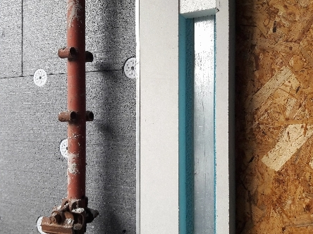

Fijaciones SATE
Fijaciones y accesorios para la instalación de paneles aislantes SATE
Gama de fijaciones para aislamiento SATE
Nuestra gama de fijaciones para SATE permite una instalación segura y efectiva de todo tipo de paneles aislantes sobre una amplia gama de materiales base. Contamos con soluciones para fijaciones mecánicas y adhesivas y con productos homologados para asegurar los más altos estándares de calidad.
AIS-S

AIS
AIS-M
AIS-R
AIS-W

AIS-AM
PU-EP
TE
TE
Anclaje para la fijación de cargas ligeras en materiales base tipo Poliestireno expandido (EPS), Poliuretano conformado (PUR) y Poliestireno extruido (XPS).
Datos técnicos
- Longitudes: Ø 25 x 50 mm y Ø 25 x 90 mm.
- Material en PA.
- Huella de instalación T40.
- Compatible con tornillos de Ø 4,5 y Ø 5 mm.
Características
- Su estructura en espiral está diseñada para adaptarse al material aislante.
- No es necesario taladro previo.
- Rápida y sencilla instalación.
- Evita la rotura del puente térmico.
Proceso de instalación
Paso 1
Paso 2
Paso 3
Paso 4
Paso 5
Paso 6
PU-EP
Adhesivo de poliuretano SATE para paneles aislantes y placas de yeso laminado. Evaluado de acuerdo a la ETAG 004.


Adhesivo indicado para la instalación de placas SATE (Sistema de Aislamiento Térmico Exterior), paneles aislantes y placas de yeso laminado. Su alta densidad en la fórmula asegura un inmediato pegado inicial y una alta adhesión.
Datos técnicos
- Volumen: (750 ml) 60 - 80 metro lineal [m].
- Densidad específica del adhesivo: 16 - 18 kg/m3.
- Conductividad Térmica: 0.036 W/(m K) a 20 °C.
- Elongación a rotura: 20 - 30 (%).
- Grado de inflamabilidad: E (B2).
- Tipo de aplicación: pistola.
Características
- Excelente adhesión en: hormigón, ladrillo, termoarcilla, yeso laminado, hormigón celular, bloques de hormigón hueco, etc.
- Facilita un avance del trabajo ágil.
- Fácil aplicación.
- Curado rápido y baja expansión.
- Resistente a la humedad y las bajas temperaturas.
- Consumo reducido, implementación de proyectos más económica.
- Ahorro en términos de transporte y almacenamiento.
- La capa del adhesivo de poliuretano bajo el panel aislante proporciona un aislamiento térmico adicional.
AIS-AM

Arandela de reparto para fijación de elementos semi rígidos.
Datos técnicos
- Diámetro de la arandela: 85 mm.
Características
- Mejora el reparto de cargas en materiales semi rígidos al aumentar el área de contacto.
- Para aplicación con el taco AIS-M.
Proceso de instalación

Paso 1

Paso 2
Paso 3
Paso 4

Paso 5
Paso 6
AIS-W
Rosetón de presión con tapón superior para fijar aislamiento térmico a una base de madera o metal mediante fijación por tornillo.
Datos técnicos
- Diámetro del rosetón 60 mm.
- Material PP.
- Compatible con tornillos de Ø 4,5 y Ø 6 mm.
Características
- El tapón evita la rotura de puente térmico.
- Rápida y sencilla instalación.
- Para ser utilizado con una amplia gama de tornillos.
- Permite la instalación de materiales de aislamiento de diferentes espesores.
- Compatible con AIS-R.
Proceso de instalación
Paso 1
Paso 2
Paso 3

Paso 4
Paso 5
AIS-R
Arandela de reparto para fijación de elementos semi rígidos.
Datos técnicos
- Diámetro de la arandela: 140 mm.
Características
- Mejora el reparto de cargas en materiales semi rígidos al aumentar el área de contacto.
- Para aplicación con el taco AIS-C o AIS-S.
Proceso de instalación
Paso 1
Paso 2
Paso 3
Paso 4
Paso 5

Paso 6
AIS-M
Fijación metálica por golpeo para la fijación de aislamientos rígidos de Poliestireno expandido (EPS), Lana mineral (MW), Poliuretano conformado (PUR), Poliestireno extruido (XPS) y Corcho expandido en materiales base tipo A y B.
Datos técnicos
- Diámetro del anclaje: 8 mm.
- Diámetro de la arandela: 35 mm.
- Profundidad efectiva: hef 40 mm.
- Longitudes: de 90 mm a 300 mm.
Características
- Resistente al fuego.
- Fijación por golpeo.
- Rápida y sencilla instalación.
- Compatible con la arandela AIS-AM.

Proceso de instalación
Paso 1
Paso 2

Paso 3
Paso 4
Paso 5

Paso 6
AIS
El taco AIS de INDEX es un taco especialmente diseñado para fijar paneles aislantes de Poliestireno expandido (EPS), Lana mineral (MW), Poliuretano conformado (PUR), Poliestireno extruido (XPS) y Corcho expandido en materiales base tipo (A y B) con o sin revoque de forma mecánica a una superficie o material base (pared o fachada).
Datos técnicos
- Diámetro del anclaje: 8 mm.
- Diámetro de la arandela: 32 mm.
- Profundidad efectiva: hef 30 mm.
- Taco blanco en PP.
- Longitudes: de 80 mm a 140 mm.
Características
- Taco de fijación por golpe.
- Fijación rápida.
- Sin necesidad de clavo.
AIS-S
Taco con clavo metálico y tapón poliamida para la fijación mecánica de paneles aislantes. Homologado ETA.
El taco AIS-S de INDEX es un taco especialmente diseñado para fijar paneles aislantes de Poliestireno expandido (EPS), Lana mineral (MW), Poliuretano conformado (PUR), Poliestireno extruido (XPS) y Corcho expandido en materiales base tipo (A, B, C, D y E) con o sin revoque de forma mecánica a una superficie o material base (pared o fachada).
Dispone de homologación europea ETA 21-0823 para la fijación de sistemas compuestos de aislamiento térmico por el exterior.
Datos técnicos
- Diámetro del anclaje: 10 mm.
- Diámetro de la arandela: 60 mm.
- Profundidad efectiva: hef 50 mm.
- Taco blanco en PP y clavo metálico con tapón negro en PA.
- Longitudes: de 70 mm a 260 mm.
Características
- Cuerpo en color blanco y clavo metálico con tapón negro para facilitar la supervisión en obra y verificar la correcta instalación del anclaje.
- El clavo metálico garantiza alta resistencia al impacto.
- Geometría de la cabeza especialmente diseñada para mejorar el agarre del enlucido y demás elementos a colocar sobre el anclaje.
- Refuerzos en la cara interior de la cabeza para mejorar su rigidez y evitar su rotura.
- Doble zona de expansión.
- Zona de expansión de 50 mm de longitud.
- Indicador de la profundidad del anclaje.
- Reducción de puente térmico gracias al tapón en PA.
- Marca de diámetro y longitud en el cuerpo del anclaje.
- Compatible con la arandela de reparto AIS-R.


Proceso de instalación
Paso 1

Paso 2

Paso 3

Paso 4
Paso 5
Paso 6
AIS-C
Taco con clavo de poliamida para la fijación mecánica de paneles aislantes. Homologado ETA.
El taco AIS-C de INDEX es un taco especialmente diseñado para fijar paneles aislantes de Poliestireno expandido (EPS), Lana mineral (MW), Poliuretano conformado (PUR), Poliestireno extruido (XPS) y Corcho expandido en materiales base tipo (A, B, C y D) con o sin revoque de forma mecánica a una superficie o material base (pared o fachada).
Disponen de homologación europea ETA 21-0823 para la fijación de sistemas compuestos de aislamiento térmico por el exterior.
Datos técnicos
- Diámetro del anclaje: 10 mm.
- Diámetro de la arandela: 60 mm.
- Profundidad efectiva: hef 50 mm.
- Taco blanco en PP y clavo negro en PA.
- Longitudes: de 70 mm a 260 mm.
Características
- Cuerpo en color blanco y clavo negro para facilitar la supervisión en obra y verificar la correcta instalación del anclaje.
- Geometría de la cabeza especialmente diseñada para mejorar el agarre del enlucido y demás elementos a colocar sobre el anclaje.
- Refuerzos en la cara interior de la cabeza para mejorar su rigidez y evitar su rotura.
- Doble zona de expansión.
- Zona de expansión de 50 mm de longitud.
- Indicador de la profundidad del anclaje.
- Reducción de puente térmico gracias a su composición.
- Marca de diámetro y longitud en el cuerpo del anclaje.
- Compatible con la arandela de reparto AIS-R.
Proceso de instalación

Paso 1

Paso 2
Paso 3

Paso 4

Paso 5

Paso 6
Tabla de selección de fijaciones SATE
| AIS-C | AIS-S | AIS | AIS-M | AIS-W | TE | ||
|---|---|---|---|---|---|---|---|
|
Material base
|
|||||||
| Madera | |||||||
| Metal | |||||||
|
Aislamiento
|
Poliestireno expandido (EPS) | ||||||
| Lana mineral (MW)* | |||||||
| Poliuretano conformado (PUR) | |||||||
| Poliestireno extruido (XPS) | |||||||
| Corcho expandido | |||||||
|
Accesorios
|
AIS-C | AIS-S | AIS-M | AIS-W | |||
| AIS-R | |||||||
| AIS-AM | |||||||
INDEX, una fijación perfecta para tu negocio
Somos fabricantes y proveedores industriales de sistemas de fijación, ofreciendo soluciones globales adaptadas a las necesidades de tu actividad.